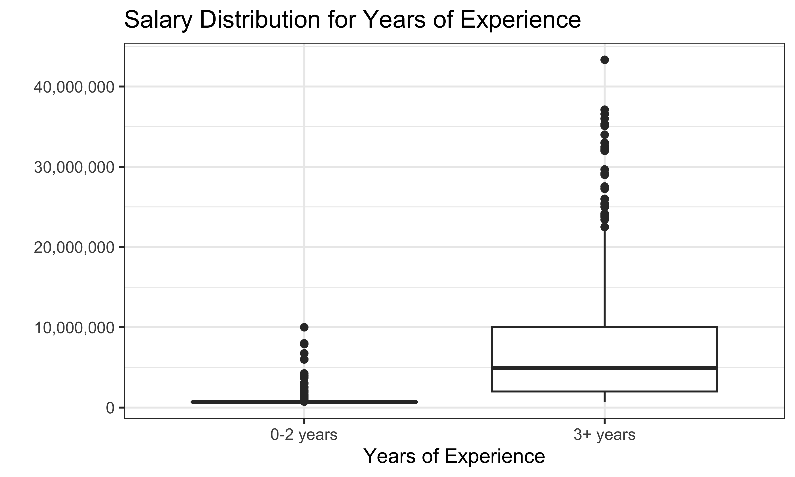
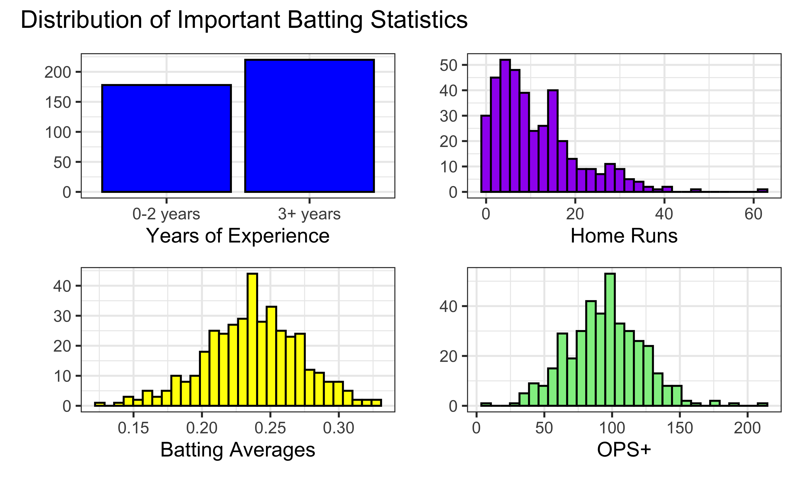
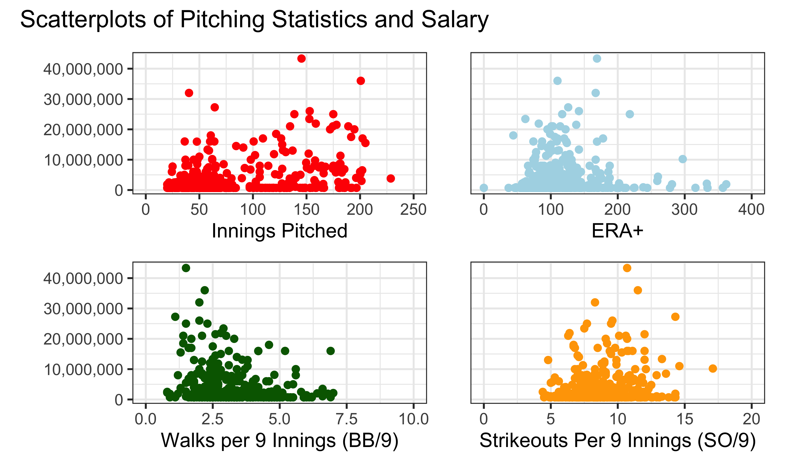
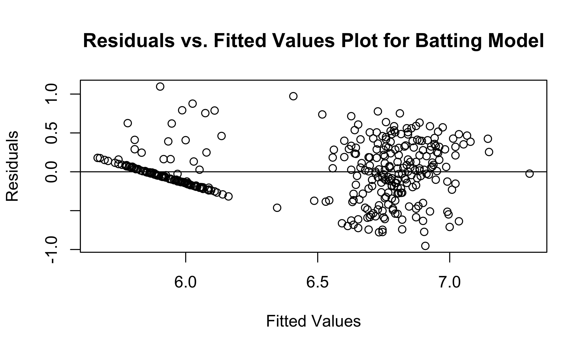

Final Report
Motivation
MLB player salaries are growing faster than ever. In 2001, former Seattle Mariners superstar Alex Rodriguez signed a 10-year, $252 million deal that broke the record for the most lucrative contract in professional sports history. And yet, Rodriguez’s deal pales in comparison to the monster contract that current superstar Juan Soto is expected to sign within the next week, which is projected to go for at least 12 years and $600 million. The skyrocketing salaries don’t just apply to the game’s most marquee names; since 2003, the average player salary has more than doubled, from $2.37 million to $4.98 million for the 2024 season (source). As players become more and more expensive and teams face increasingly harsh luxury tax penalties for exceeding certain payroll thresholds, MLB teams face important decisions on which, if any, free agents to sign to long-term, expensive contracts.
The primary goal of our project is to determine whether baseball players – both batters and pitchers – are worth their salaries, and whether teams should focus primarily on signing big-money free agents or taking a more egalitarian and young player-heavy approach. More specifically, are advanced statistics such as OPS+ (for hitters) and ERA+ (for pitchers) significantly associated with player salary? Our conclusions could give MLB teams insight into how they can build their rosters to optimize their chances of making the postseason and ultimately winning the World Series.
Initial questions
Before beginning the project, we set out to potentially answer three primary questions:
What collected statistics are most correlated with salary? Are advanced statistics such as ERA closer than simple counts such as strikeouts?
Are GMs good at deciding who to give contracts? That is, do the players with the highest salaries have the best performance metrics?
Can we predict the salary of a player with a model built from their 2022 statistics?
After conducting an exploratory data analysis, we adjusted our questions into:
Can we construct a model from both counting and advanced statistics that predicts the salary of a baseball player?
What player is on the ‘best’ contract? That is, who is the best player in the MLB in terms outperforming their contract? What player is on the ‘worst’ contract?
Data
Salary Data
salaries = read_excel(
"data/MLB-Salaries 2000-24.xlsx",
sheet = "2022.xls",
skip = 1) |>
select(1:4) |>
rename(position = "Pos'n",
salary_2022 = "2022.0",
service_time_yrs = "MLS",
name = "Player") %>%
mutate(name = str_split(name, ","),
name = map(name, rev),
name = map_chr(name, str_c, collapse = " "),
name = str_trim(name),
name = str_replace_all(name, "[*#\\.,]", ""),
junior = str_detect(name, "Jr"),
name = if_else(junior == TRUE, str_remove(name, " Jr"), name),
name = if_else(junior == TRUE, str_c(name, " Jr"), name),
name = stringi::stri_trans_general(name,id = "Latin-ASCII")) |>
select(-junior) %>%
mutate(simple_position = str_split_i(position, "-", 1),
simple_position = fct_relevel(simple_position,
c("c", "1b", "2b", "3b", "ss",
"lf", "cf", "rf", "inf", "of",
"dh", "rhp", "lhp")),
service_time_floor = floor(service_time_yrs),
experience_group = case_when(service_time_floor <= 2 ~ "0-2 years",
service_time_floor >= 3 ~ "3+ years"))Batting Data
batting = read_delim("data/2022 MLB Player Stats - Batting.csv", delim = ";",
locale = locale(encoding = "latin1")) |>
janitor::clean_names() %>%
group_by(name) |>
mutate(name_count = n(),
keep_row = case_when(name_count == 1 ~ TRUE,
name_count > 1 & tm == "TOT" ~ TRUE,
.default = FALSE)) |>
filter(keep_row == TRUE) %>%
mutate(name_count = n(),
keep_row = case_when(name_count == 1 ~ TRUE,
name_count > 1 & lg == "MLB" ~ TRUE,
.default = FALSE)) |>
ungroup() |>
filter(keep_row == TRUE) %>%
mutate(name = str_split(name, "\\s+"),
name = map_chr(name, str_c, collapse = " "),
name = str_trim(name),
name = str_replace_all(name, "[*#\\.]", ""),
name = stringi::stri_trans_general(name,id = "Latin-ASCII"))
merged_batting <- salaries |>
mutate(simple_position = str_split_i(position, "-", 1)) |>
filter(!simple_position %in% c("rhp","lhp")) |>
inner_join(batting, by = "name") |>
filter(pa >= 100)
salary_not_in_batting <- anti_join(salaries, batting, by = "name")
batting_not_in_salary <- anti_join(batting, salaries, by = "name")Pitching Data
pitching = read_delim("data/2022 MLB Player Stats - Pitching.csv", delim = ";",
locale = locale(encoding = "latin1")) |>
janitor::clean_names() %>%
group_by(name) |>
mutate(name_count = n(),
keep_row = case_when(name_count == 1 ~ TRUE,
name_count > 1 & tm == "TOT" ~ TRUE,
.default = FALSE)) |>
filter(keep_row == TRUE) %>%
mutate(name_count = n(),
keep_row = case_when(name_count == 1 ~ TRUE,
name_count > 1 & lg == "MLB" ~ TRUE,
.default = FALSE)) |>
ungroup() |>
filter(keep_row == TRUE) %>%
mutate(name = str_split(name, "\\s+"),
name = map_chr(name, str_c, collapse = " "),
name = str_trim(name),
name = str_replace_all(name, "[*#\\.]", ""),
name = stringi::stri_trans_general(name,id = "Latin-ASCII"))
merged_pitching <- inner_join(salaries, pitching, by = "name") |>
filter(ip >= 20) |>
separate(ip, into = c("ip", "ip_dec"), remove = FALSE, convert = TRUE) |>
mutate(ip_dec_333 = ifelse(is.na(ip_dec), 0, ip_dec * 333) ,
ip_total = paste(ip, ip_dec_333, sep = "."),
ip_total = as.numeric(ip_total)) |>
select(-ip, -ip_dec, -ip_dec_333) |>
separate(position, into = c("hand", "pitcher_type")) |>
mutate(pitcher_type = ifelse(is.na(pitcher_type), "r", pitcher_type)) |>
filter(hand == "lhp" | hand == "rhp")
salary_not_in_pitching <- anti_join(salaries, pitching, by = "name")
pitching_not_in_salary <- anti_join(pitching, salaries, by = "name")Exploratory analysis
Our exploratory data analysis can be grouped into three categories: salary, batting, and pitching.
Salary EDA
Player salaries were highly right-skewed. This was expected, as many players make the league minimum salary of 700,000. The one position group not so heavily right skewed are the Designated Hitters. Similarly, the Designated Hitters had a higher average years of experience. Intuitively this makes sense as teams will want to select the better players for the position. Overall, most players were in their first year of the MLB with 68.2% having 5 or less years of experience. Players with more years of experience seem to get higher salaries, increasing as their years of experience.
# Salary by Posiition Group
salaries |>
mutate(position_group = case_match(simple_position,
c("rhp","lhp") ~ "pitcher",
c("cf","lf","rf","of") ~ "outfield",
"dh" ~ "dh",
.default = "infield")) |>
ggplot(aes(x = salary_2022, color = position_group)) +
geom_density() +
labs(title = "Salary by Position Group",
x = "2022 Salary",
y = "") +
scale_x_continuous(labels = label_comma()) +
scale_color_discrete(name = "Position Group",
labels = c("Designated Hitter",
"Infield",
"Outfield",
"Pitcher")) +
theme_bw()
# Salary by Experience
salaries %>%
ggplot(aes(x=factor(floor(service_time_yrs)), y=salary_2022)) +
geom_boxplot() +
labs(title = "Salary Distribution for Years of Experience",
x = "Years of Experience",
y = "") +
scale_y_continuous(labels = label_comma()) +
theme_bw()# Salary by Experience
salaries %>%
ggplot(aes(x=experience_group, y=salary_2022)) +
geom_boxplot() +
labs(title = "Salary Distribution for Years of Experience",
x = "Years of Experience",
y = "") +
scale_y_continuous(labels = label_comma()) +
theme_bw()
# Experience by Position
salaries |>
ggplot(aes(x = service_time_floor,
y = simple_position,
fill = simple_position)) +
ggridges::geom_density_ridges(alpha = 0.5) +
labs(title = "Experience by Position",
x = "Years of Experience",
y = "") +
xlim(0,25) +
scale_y_discrete(labels = c("1b" = "1st Base",
"2b" = "2nd Base",
"3b" = "3rd Base",
"inf" = "Infield",
"c" = "Catcher",
"rf" = "Right Field",
"lf" = "Left Field",
"cf" = "Center Field",
"of" = "Outfield",
"lhp" = "Left Hand Pitcher",
"rhp" = "Right Hand Pitcher",
"dh" = "Designated Hitter",
"ss" = "Shortstop")) +
guides(fill="none") +
theme_bw()Batting EDA
Many of the counting statistics for batting are right skewed, as most players are not hitting multiple home runs in the season. Some of the advanced statistics such as OPS+ are more normally distributed. An important idea to keep in mind is that many of these collected statistics are strongly correlated with each other as the advanced statistics are often a formula taking input from the counting statistics. Looking at the relation with salary, it seems that there may be an association between salary and home runs as well as OPS+.
# Chances at Bat by Home Runs
merged_batting %>%
ggplot(aes(x = ab,y= hr)) +
geom_point(aes(color = ops)) +
geom_smooth(method = lm, se = FALSE, color = "firebrick") +
labs(title = "Who is the most 'effective' at the plate?",
x = "Chances at Bat",
y = "Number of Home Runs") +
scale_color_continuous("OPS") +
theme_bw()# Corrs for Batting Data
merged_batting |>
select(hr, ba, ops) |>
GGally::ggpairs()# Distributions for Used Statistics
yrsCol = merged_batting |>
count(experience_group) |>
ggplot(aes(x = experience_group, y=n)) +
geom_col(fill = 'blue', col = 'black') +
labs(x="Years of Experience",y="") +
theme_bw()
hrsHist = merged_batting |>
ggplot(aes(x = hr)) +
geom_histogram(fill = 'purple', col = 'black') +
labs(x="Home Runs",y="") +
theme_bw()
basHist = merged_batting |>
ggplot(aes(x = ba)) +
geom_histogram(fill = 'yellow', col = 'black') +
labs(x="Batting Averages",y="") +
theme_bw()
opsHist = merged_batting |>
ggplot(aes(x = ops_2)) +
geom_histogram(fill = 'lightgreen', col = 'black') +
labs(x="OPS+",y="") +
theme_bw()
dist_patch = (yrsCol+hrsHist)/(basHist+opsHist)
dist_patch + plot_annotation(title = "Distribution of Important Batting Statistics")
# Scatter for Used Statistics
yrs = merged_batting |>
ggplot(aes(x = experience_group, y = salary_2022)) +
geom_boxplot(col = 'blue') +
labs(x="Years of Experience",y="") +
scale_y_continuous(labels = label_comma()) +
theme_bw()
hrs = merged_batting |>
ggplot(aes(x = hr, y = salary_2022)) +
geom_point(col = 'purple') +
guides(y="none") +
labs(x="Home Runs",y="") +
theme_bw()
bas = merged_batting |>
ggplot(aes(x = ba, y = salary_2022)) +
geom_point(col = 'yellow') +
labs(x="Batting Averages",y="") +
scale_y_continuous(labels = label_comma()) +
theme_bw()
ops = merged_batting |>
ggplot(aes(x = ops_2, y = salary_2022)) +
geom_point(col = 'lightgreen') +
guides(y="none") +
labs(x="OPS+",y="") +
theme_bw()
scatter_patch = (yrs+hrs)/(bas+ops)
scatter_patch + plot_annotation(title = "Scatterplot of Batting Statistics and Salary")Pitching EDA
ip_plot = merged_pitching |>
ggplot(aes(x = ip_total)) +
geom_histogram(binwidth = 5, fill = "red", col = "black") +
labs(
x = "Innings Pitched",
y = "") +
theme_bw()
era_plot = merged_pitching |>
ggplot(aes(x = era_2)) +
geom_histogram(fill = "lightblue", col = "black") +
labs(
x = "ERA+",
y = "") +
theme_bw()
bb_plot = merged_pitching |>
ggplot(aes(x = bb9)) +
geom_histogram(fill = "darkgreen", col = "black") +
labs(
x = "Walks per 9 Innings (BB/9)",
y = "") +
theme_bw()
so_plot = merged_pitching |>
ggplot(aes(x = so9)) +
geom_histogram(fill = "orange", col = "black") +
labs(
x = "Strikeouts per 9 Innings (SO/9)",
y = "") +
guides() +
theme_bw()
hist_pitch = (ip_plot + era_plot) / (bb_plot + so_plot)
hist_pitch + plot_annotation(title = "Histograms of Pitching Statistics")
The distribution of innings pitched is quite right-skewed, with a peak around 70 innings pitched. The distribution of ERA+ is right-skewed as well, with a peak around 100 (the league average) and a small number of pitchers with an ERA+ above 200. The distributions of BB/9 and SO/9 are mostly symmetric, with peaks around 3 and 9, respectively.
ip_sal = merged_pitching |>
ggplot(aes(x = ip_total, y = salary_2022)) +
geom_point(col = "red") +
scale_x_continuous(lim = c(0, 250)) +
scale_y_continuous(labels = label_comma()) +
labs(x = "Innings Pitched",
y = "") +
theme_bw()
era_sal = merged_pitching |>
ggplot(aes(x = era_2, y = salary_2022)) +
geom_point(col = "lightblue") +
scale_x_continuous(lim = c(0, 400)) +
scale_y_continuous(labels = label_comma()) +
labs(x = "ERA+",
y = "") +
guides(y="none") +
theme_bw()
bb_sal = merged_pitching |>
ggplot(aes(x = bb9, y = salary_2022)) +
geom_point(col = "darkgreen") +
scale_x_continuous(lim = c(0, 10)) +
scale_y_continuous(labels = label_comma()) +
labs(x = "Walks per 9 Innings (BB/9)",
y = "") +
theme_bw()
so_sal = merged_pitching |>
ggplot(aes(x = so9, y = salary_2022)) +
geom_point(col = "orange") +
scale_x_continuous(lim = c(0, 20)) +
scale_y_continuous(labels = label_comma()) +
labs(x = "Strikeouts Per 9 Innings (SO/9)",
y = "") +
guides(y="none") +
theme_bw()
scatt_pitch = (ip_sal + era_sal) / (bb_sal + so_sal)
scatt_pitch + plot_annotation(title = "Scatterplots of Pitching Statistics and Salary")
Interestingly, the pitchers with the highest ERA+ often had considerably lower salaries.
Additional analysis
Batting Model
lm_batting = lm(log10(salary_2022) ~ ops_2 + experience_group,
data = merged_batting)
summary(lm_batting)##
## Call:
## lm(formula = log10(salary_2022) ~ ops_2 + experience_group, data = merged_batting)
##
## Residuals:
## Min 1Q Median 3Q Max
## -0.95350 -0.18334 -0.02296 0.21119 1.09670
##
## Coefficients:
## Estimate Std. Error t value Pr(>|t|)
## (Intercept) 5.5217232 0.0669508 82.474 < 2e-16 ***
## ops_2 0.0043860 0.0006429 6.823 3.93e-11 ***
## experience_group3+ years 0.8509329 0.0376350 22.610 < 2e-16 ***
## ---
## Signif. codes: 0 '***' 0.001 '**' 0.01 '*' 0.05 '.' 0.1 ' ' 1
##
## Residual standard error: 0.3432 on 351 degrees of freedom
## (44 observations deleted due to missingness)
## Multiple R-squared: 0.6228, Adjusted R-squared: 0.6207
## F-statistic: 289.8 on 2 and 351 DF, p-value: < 2.2e-16plot(residuals(lm_batting) ~ fitted.values(lm_batting),
main = "Residuals vs. Fitted Values Plot for Batting Model",
xlab = "Fitted Values",
ylab = "Residuals")
abline(h = 0)
qqnorm(residuals(lm_batting),
main = "Normal Q-Q Plot for Batting Model")
qqline(residuals(lm_batting))
We decided to log-transform the salary variable because it is heavily right-skewed, and decided to use \(log_{10}\) instead of \(ln\) for the sake of interpretability. We included OPS+, the “all-in-one” measure of hitter performance as well as their number of years of experience.
From our model, we can see that batters with more experience have higher salaries, even adjusting for performance. At the same time, adjusting for service time, batters with higher OPS+ (that is, batters who perform better) have significantly higher salaries.
Based on this model, which player provided the best value for money? Who was most cost effective? That would be the player with a high OPS+ and the lowest residual, indicating that their actual salary was lower than predicted based on their performance.
Top 5 Batters by Value
merged_batting |>
modelr::add_predictions(lm_batting) |>
modelr::add_residuals(lm_batting) |>
arrange(resid) |>
select(name, salary_2022, service_time_floor, experience_group, ops_2, pred, resid ) |>
mutate(expected_salary = 10^pred) |>
slice(1:5)| name | salary_2022 | service_time_floor | experience_group | ops_2 | pred | resid | expected_salary |
|---|---|---|---|---|---|---|---|
| Brandon Drury | 900000 | 5 | 3+ years | 122 | 6.907744 | -0.9535020 | 8086200 |
| Luke Maile | 900000 | 4 | 3+ years | 82 | 6.732306 | -0.7780632 | 5398905 |
| Kyle Higashioka | 935000 | 3 | 3+ years | 85 | 6.745464 | -0.7746520 | 5564980 |
| Dylan Moore | 1350000 | 3 | 3+ years | 121 | 6.903359 | -0.7730247 | 8004948 |
| Colin Moran | 1000000 | 4 | 3+ years | 85 | 6.745464 | -0.7454636 | 5564980 |
Top 10 Batters by Salary
merged_batting |>
modelr::add_predictions(lm_batting) |>
modelr::add_residuals(lm_batting) |>
arrange(desc(salary_2022)) |>
select(name, salary_2022, service_time_floor,experience_group, ops_2, pred, resid ) |>
mutate(expected_salary = 10^pred) |>
slice(1:10)| name | salary_2022 | service_time_floor | experience_group | ops_2 | pred | resid | expected_salary |
|---|---|---|---|---|---|---|---|
| Mike Trout | 37116667 | 10 | 3+ years | 176 | 7.144587 | 0.4249821 | 13950407 |
| Anthony Rendon | 36571429 | 8 | 3+ years | 100 | 6.811253 | 0.7518888 | 6475199 |
| Carlos Correa | 35100000 | 6 | 3+ years | 137 | 6.973534 | 0.5717731 | 9408796 |
| Manny Machado | 34000000 | 9 | 3+ years | 158 | 7.065639 | 0.4658395 | 11631599 |
| Corey Seager | 33000000 | 6 | 3+ years | 117 | 6.885815 | 0.6326993 | 7688022 |
| Nolan Arenado | 32974847 | 8 | 3+ years | 151 | 7.034938 | 0.4832452 | 10837712 |
| Francisco Lindor | 32477277 | 6 | 3+ years | 126 | 6.925288 | 0.5862912 | 8419540 |
| Miguel Cabrera | 32000000 | 18 | 3+ years | 81 | 6.727920 | 0.7772303 | 5344655 |
| George Springer | 29666667 | 7 | 3+ years | 133 | 6.955990 | 0.5162786 | 9036290 |
| Jose Altuve | 29200000 | 10 | 3+ years | 161 | 7.078797 | 0.3865855 | 11989397 |
It looks like in 2022, the most cost-effective player was Albert Pujols, who made $2.5 million in his 21st season with an OPS+ of 151.
Pitching Model
lm_pitching = lm(log10(salary_2022) ~ hand + pitcher_type + hand*pitcher_type + ip_total + era_2 + bb9 + so9 + experience_group,
data = merged_pitching)
summary(lm_pitching)##
## Call:
## lm(formula = log10(salary_2022) ~ hand + pitcher_type + hand *
## pitcher_type + ip_total + era_2 + bb9 + so9 + experience_group,
## data = merged_pitching)
##
## Residuals:
## Min 1Q Median 3Q Max
## -0.7256 -0.1353 0.0000 0.1118 0.9380
##
## Coefficients:
## Estimate Std. Error t value Pr(>|t|)
## (Intercept) 6.5815420 0.3024707 21.759 < 2e-16 ***
## handrhp -0.4242111 0.3054319 -1.389 0.165624
## pitcher_typer -0.8528043 0.2839805 -3.003 0.002838 **
## pitcher_types -0.5941512 0.2867592 -2.072 0.038898 *
## ip_total 0.0014225 0.0003437 4.139 4.24e-05 ***
## era_2 -0.0004776 0.0002877 -1.660 0.097707 .
## bb9 -0.0377370 0.0128069 -2.947 0.003397 **
## so9 0.0247501 0.0072925 3.394 0.000756 ***
## experience_group3+ years 0.6080049 0.0299496 20.301 < 2e-16 ***
## handrhp:pitcher_typer 0.4144199 0.3072509 1.349 0.178149
## handrhp:pitcher_types 0.3405457 0.3101460 1.098 0.272844
## ---
## Signif. codes: 0 '***' 0.001 '**' 0.01 '*' 0.05 '.' 0.1 ' ' 1
##
## Residual standard error: 0.2786 on 408 degrees of freedom
## (50 observations deleted due to missingness)
## Multiple R-squared: 0.677, Adjusted R-squared: 0.6691
## F-statistic: 85.52 on 10 and 408 DF, p-value: < 2.2e-16plot(residuals(lm_pitching) ~ fitted.values(lm_pitching),
main = "Residuals vs. Fitted Values Plot for Pitching Model",
xlab = "Fitted Values",
ylab = "Residuals")
abline(h = 0)qqnorm(residuals(lm_pitching),
main = "Normal Q-Q Plot for Pitching Model")
qqline(residuals(lm_pitching))We decided to log-transform the salary variable because it is heavily
right-skewed, and decided to use \(log_{10}\) instead of \(ln\) for the sake of interpretability. We
included ERA+, the measure of a pitcher’s ERA relative to the league
average, as well as innings pitched (ip_total), walks per
nine innings (bb9) and strikeouts per nine innings
(so9); we used walks/strikeouts per nine innings since the
total number of walks/strikeouts would be highly correlated with the
number of innings pitched.
We accounted for pitcher handedness (right vs. left) as well as pitcher type (the default type is a closing pitcher, with relief pitchers and starting pitchers also included in the model). Finally, we explored the interaction between handedness and pitcher type to see if pitcher type affects the relationship between handedness and salary.
From our model, we can see that pitcher handedness and pitcher type
have no significant effect on expected salary. Interestingly, the
era_2 predictor, even when accounting for pitcher
handedness, pitcher type, and the number of innings pitched, has an
insignificant \(P\)-value, implying
that there is no significant association between one of the most highly
regarded summative statistics for pitching effectiveness and pitcher
salary when accounting for pitcher handedness, pitcher type, innings
pitched, walk and strikeout rates, and service time.
The residuals vs. fitted values plot shows that the residuals are generally evenly spread out; the straight line on the left side of the plot represents the large number of MLB players who are still on their rookie contracts, and therefore have a low fitted value (as they usually make between $700,000 and $1,000,000 per year, which is quite low by MLB standards). The Normal Q-Q plot shows that the model’s residuals deviate only slightly from Normal behavior.
Top 5 Pitchers by Value
merged_pitching |>
modelr::add_predictions(lm_pitching) |>
modelr::add_residuals(lm_pitching) |>
arrange(resid) |>
select(name, salary_2022, service_time_floor, experience_group, era_2, pred, resid ) |>
mutate(expected_salary = 10^pred) |>
slice(1:5)| name | salary_2022 | service_time_floor | experience_group | era_2 | pred | resid | expected_salary |
|---|---|---|---|---|---|---|---|
| Drew Hutchison | 800000 | 4 | 3+ years | 85 | 6.628671 | -0.7255811 | 4252762 |
| Ryan Borucki | 825000 | 3 | 3+ years | 68 | 6.637406 | -0.7209523 | 4339166 |
| Trevor Richards | 1000000 | 3 | 3+ years | 72 | 6.668099 | -0.6680993 | 4656926 |
| Sean Newcomb | 900000 | 3 | 3+ years | 48 | 6.603083 | -0.6488400 | 4009429 |
| Jeffrey Springs | 947500 | 3 | 3+ years | 150 | 6.615970 | -0.6393911 | 4130192 |
Top 10 Pitchers by Salary
merged_pitching |>
modelr::add_predictions(lm_pitching) |>
modelr::add_residuals(lm_pitching) |>
arrange(desc(salary_2022)) |>
select(name, salary_2022, service_time_floor, experience_group, era_2, pred, resid ) |>
mutate(expected_salary = 10^pred) |>
slice(1:10)| name | salary_2022 | service_time_floor | experience_group | era_2 | pred | resid | expected_salary |
|---|---|---|---|---|---|---|---|
| Max Scherzer | 43333333 | 13 | 3+ years | 169 | 6.845976 | 0.7908462 | 7014163 |
| Gerrit Cole | 36000000 | 8 | 3+ years | 110 | 6.946254 | 0.6100489 | 8835957 |
| David Price | 32000000 | 11 | 3+ years | 167 | 6.702960 | 0.8021897 | 5046151 |
| Jacob deGrom | 27257728 | 7 | 3+ years | 126 | 6.855482 | 0.5800073 | 7169392 |
| Zack Wheeler | 26000000 | 8 | 3+ years | 142 | 6.823685 | 0.5912886 | 6663229 |
| Justin Verlander | 25000000 | 16 | 3+ years | 218 | 6.835075 | 0.5628650 | 6840298 |
| Marcus Stroman | 25000000 | 7 | 3+ years | 117 | 6.756888 | 0.6410518 | 5713316 |
| Patrick Corbin | 23416667 | 9 | 3+ years | 62 | 6.859146 | 0.5103788 | 7230134 |
| Madison Bumgarner | 21882892 | 11 | 3+ years | 82 | 6.834678 | 0.5054269 | 6834044 |
| Carlos Rodon | 21500000 | 6 | 3+ years | 138 | 6.981582 | 0.3508561 | 9584786 |
Discussion
As MLB salaries continue to rise at exponential rates, it is important to assess whether the league’s biggest contracts are worth it. Baseball is currently undergoing an analytics-fueled revolution, inspired by statisticians such as Bill James and teams such as the 2002 “Moneyball” Oakland A’s, that is drastically changing the way the game is played and the way in which front offices choose which players to sign and how to maximize their talent. As a consequence of this revolution, MLB teams have deemphasized simpler statistics once thought of as key indicators of performance – such as batting average for hitters and wins for pitchers – in favor of more complex ones, such as OPS+ and ERA+, that more thoroughly encapsulate a player’s value to their team.
We sought to use these advanced statistics in order to explore whether players with top salaries are truly earning them. We found that while OPS+ had a significant positive association with salary for hitters, ERA+ had no significant association with salary for pitchers, implying that other indicators – specifically service time, innings pitched, walk rate, and strikeout rate – were stronger predictors of a player’s salary. The team-building implications of these results are fascinating, especially with respect to pitchers. If there is little to no association between a pitcher’s ability to limit runs and their salary, which kinds of pitchers should teams sign in order to maximize the value of their contracts?
The top five batters and top five pitchers, by salary below expected, came from similar demographics: veterans on cheap deals. All ten of these players had at least nine years’ worth of service time, and only Albert Pujols, in his 22nd and final season, made more than half of the average MLB salary in 2022. The implications for team-building based on these results are clear: instead of spending large amounts on a select few players, give deals to veterans who may be undervalued by the market, as they are more likely to produce value than the most expensive players. The Tampa Bay Rays, a team known for their reluctance to spend as much as their success, have utilized this strategy quite well, riding a combination of young players on rookie contracts and veterans let go by other teams – such as Yandy Diaz, Manuel Margot, Ji-Man Choi, Corey Kluber, and Jeffrey Springs – to the fifth-highest winning percentage in MLB (out of 30 teams) over the last 10 seasons.
So, what does this mean for the players who earn top-dollar contracts? On the pitching side, eight of the top 10 pitchers by salary recorded an ERA+ above 110, meaning that they were a good deal more effective at getting outs than the average pitcher. And yet, only one of them (Justin Verlander, who won the AL Cy Young Award as the AL’s top pitcher in 2022) had an expected salary that was higher than their actual salary. In other words, even though many of these pitchers enjoyed good if not great seasons, their performance was still not quite strong enough to justify their salaries.
However, these results should be interpreted with some caution, given
the importance of service time with respect to our model’s predicted
salary. For example, since the service_time coefficient of
our pitching model is about 0.091, ten years’ worth of service time
would result in an \(0.91\)-unit
increase in the log of salary, or a \(10^{0.91} = 8.13\)-fold increase in salary.
Therefore, veteran pitchers such as Verlander, are much more likely to
be given higher expected salaries by our model than young pitchers, even
if their statistics are strong.
There is an inherent trade-off between including an excluding service time from our models. For example, the pitching model has an adjusted \(R^2\) of 0.687 with the service time parameter and 0.337 without it, meaning that adding service time to the model more than doubles the portion of the variance in salary that can be explained by the model. However, including service time potentially undervalues the contributions of young players, almost all of whom are on cheap contracts, that significantly outperform their salary.